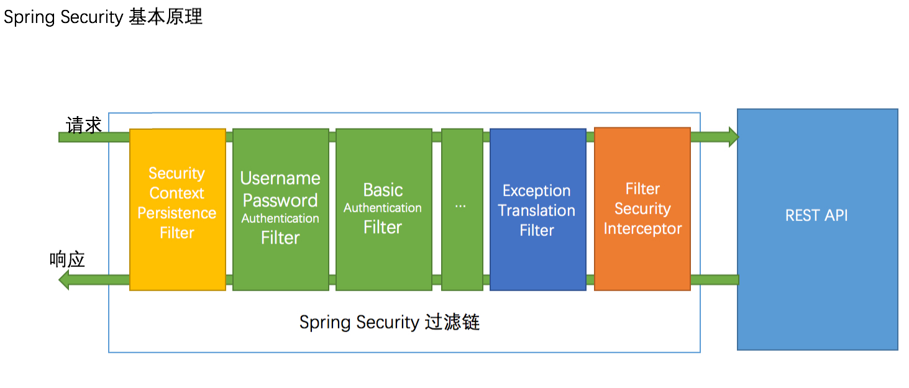
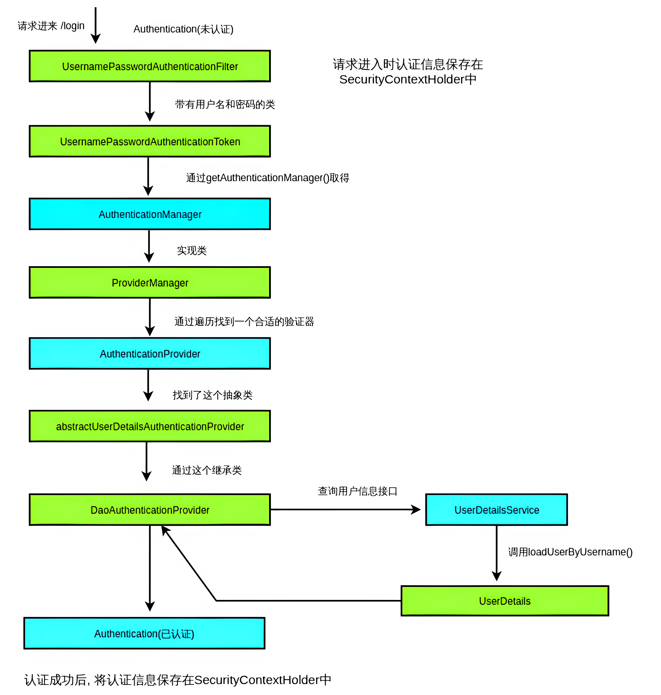

SpringSecurity5（13-核心组件和认证流程）
SecurityContextHolder
SecurityContextHolder 持有的是安全上下文的信息，当前操作的用户是谁，用户是否已经被认证，他拥有哪些角色权限等，这些都被保存在 SecurityContextHolder 中。SecurityContextHolder 默认使用 ThreadLocal 策略来存储认证信息，在 web 环境下，SpringSecurity 在用户登录时自动绑定认证信息到当前线程，在用户退出时，自动清除当前线程的认证信息
1 | public class SecurityContextHolder { |
SecurityContext
安全上下文，主要持有 Authentication 对象，如果用户未鉴权，那么 Authentication 对象将会是空的
1 | public interface SecurityContext extends Serializable { |
Authentication
鉴权对象，该对象主要包含了用户的详细信息（UserDetails）和用户鉴权所需要的信息，如用户提交的用户名密码、Remember-me Token 或 digest hash 值等，按不同鉴权方式使用不同的 Authentication 实现
1 | public interface Authentication extends Principal, Serializable { |
GrantedAuthority
表示了当前用户所拥有的权限（或角色）信息，这些信息由授权负责对象 AccessDecisionManager 来使用，并决定最终用户是否可以访问某资源（URL 或方法调用或域对象），鉴权使并不会使用到该对象
1 | public interface GrantedAuthority extends Serializable { |
UserDetailsService
提供一个接口 loadUserByUsername(String username)，一般通过扩展该接口显式获取我们的用户信息，用户登陆时传递的用户名和密码也是通过这里查找出来的用户名和密码进行校验，真正的校验由 AuthenticationManager 和 AuthenticationProvider 负责的。如果用户不存在时应返回 NULL，而是抛出异常 UsernameNotFoundException
1 | public interface UserDetailsService { |
UserDetails
规范了用户详细信息所拥有的字段，如用户名、密码、账号是否过期、是否锁定等，在 SpringSecurity 中，获取当前登录的用户的信息，一般情况是需要在该接口上面进行扩展
1 | public interface UserDetails extends Serializable { |
获取用户信息
1 | // 获取安全上下文对象，就是那个保存在 ThreadLocal 里面的安全上下文对象 |
安全身份认证流程
过滤器链

当初始化 Spring Security 时，在 org.springframework.security.config.annotation.web.configuration.WebSecurityConfiguration 中会往 Spring 容器中注入一个名为 SpringSecurityFilterChain 的 Servlet 过滤器，类型为 org.springframework.security.web.FilterChainProxy。它实现了 javax.servlet.Filter，因此外部的请求都会经过这个类，而 FilterChainProxy 是一个代理，真正起作用的是 FilterChainProxy 中 SecurityFilterChain 所包含的各个 Filter
- SecurityContextPersistenceFilter
这个 Filter 是整个拦截过程的入口和出口（也就是第一个和最后一个拦截器），会在请求开始时从配置好的 SecurityContextRepository 中获取 SecurityContext，然后把它设置给 SecurityContextHolder。在请求完成后将 SecurityContextHolder 持有的 SecurityContext 再保存到配置好的 SecurityContextRepository，同时清除 securityContextHolder 所持有的 SecurityContext
- UsernamePasswordAuthenticationFilter
用于处理来自表单提交的认证。该表单必须提供对应的用户名和密码，其内部还有登录成功或失败后进行处理的 AuthenticationSuccessHandler 和 AuthenticationFailureHandler，这些都可以根据需求做相关改变
- FilterSecurityInterceptor
是用于保护 web 资源的，使用 AccessDecisionManager 对当前用户进行授权访问
- ExceptionTranslationFilter
能够捕获来自 FilterChain 所有的异常，并进行处理。但是它只会处理两类异常：AuthenticationException 和 AccessDeniedException，其它的异常它会继续抛出
认证流程


- Spring Security 定义了一个过滤器链，当认证请求到达这个链时，该请求将会穿过这个链条用于认证和授权，这个链上可以定义 1~N 个过滤器，过滤器的用途是获取请求中的认证信息，根据认证方法进行路由，把认证信息传递给对应的认证处理程序进行处理，不同的过滤器处理不同的认证信息
- HTTP Basic 认证通过过滤器链，到达 BasicAuthenticationFilter
- HTTP Digest 认证被 DigestAuthenticationFilter 识别，拦截并处理
- 表单登录认证被 UsernamePasswordAuthenticationFilter 识别，拦截并处理
- 基于用户凭证创建 AuthenticationToken
如：用户在登录表单中输入用户名和密码，并点击确定，浏览器提交 POST 请求到服务器，穿过过滤器链，被 UsernamePasswordAuthenticationFilter 识别，UsernamePasswordAuthenticationFilter 提取请求中的用户名和密码来创建 UsernamePasswordAuthenticationToken 对象
- 把组装好的 AuthenticationToken 传递给 AuthenticationManager
如：组装好的 UsernamePasswordAuthenticationToken 对象被传递给 AuthenticationManager 的 authenticate 方法进行认证决策，AuthenticationManager 只是一个接口，实际的实现是 ProviderManager
- ProviderManager 委托给 AuthenticationProvider 进行认证处理
AuthenticationProvider 提供了不同的实现类，ProviderManager 会把收到的 UsernamePasswordAuthenticationToken 对象传递给列表中的每一个 AuthenticationProvider 进行认证，那 UsernamePasswordAuthenticationToken 会被哪一个接收和处理呢？是由 supports 方法来决定的
- UserDetailsService 获取用户信息
例如：DaoAuthenticationProvider 通过 UserDetailsService 查找对应的用户信息
- 认证结果处理
例如：如果认证成功（用户名和密码完全正确），AuthenticationProvider 将会返回一个完全有效的 Authentication 对象（UsernamePasswordAuthenticationToken），否则抛出 AuthenticationException 异常
认证完成后，AuthenticationManager 将会返回该认证对象（UsernamePasswordAuthenticationToken）返回给过滤器
- 存储认证对象
相关的过滤器获得一个认证对象后，把他存储在安全上下文中（SecurityContext）用于后续的授权判断